Полезно
НЯКОЛКО СЪВЕТА ЗА ОТЛИЧНО ИЗПИРАНЕ
- Внимателно подбирайте дрехите, които ще перете заедно. Най-добре би било да са близки по цвят, за да не се оцвети някоя дреха. За предотвратяване на нежелано оцветяване на дрехите е добре да се добавят цветоулавящи кърпички, като броят им зависи от интензитетът на цветовете. Когато подбирате дрехите за пране, внимателно разгледайте етикетите им за начина на почистване и възможностите и начина на сушене. Ако имате колебания относно някоя дреха, е препоръчително да се консултирате с наш служител.
- Разпределяйте количеството дрехи, което ще изперете не толкова като килограми, колкото като заемащ обем. Като пример може да посочим когато перете вълнено палто или дебело яке заедно с други дрехи, ако барабанът на пералнята машина се препълни, крайният резултат ще бъде силно намачкано яке и недобре изплакнато пране поради липсата на място в барабана. При пране на олекотена завивка, тя увеличава обема си двойно т.е. ще изпълни достатъчно барабана, а добавянето на още дрехи ще затрудни изпирането и изплакването им. На по-късен етап, когато се сушат дрехите в сушилнята, също е необходимо да има повече пространство, за да се обдухват свободно дрехите и да не се намачкват на „хармоника”.
- Хубаво проверявайте джобовете на дрехите за забравени вещи, които могат да повредят дрехите ви. Обръщайте дънките и панталоните да се се перат от опаковата страна, за да запазите цвета им по-дълго.
- Прегледайте внимателно дрехите, които ще се сушат. Сушилните машини работят с температури до 60°С. При тези температури има метерии, които се деформират, свиват, усукват и т.н. Това няма как да бъде предотвратено от оператора, единственото, което той може да направи е да отдели дрехата за която имате съмнение и да не я суши. Може да предупредите, ако някоя конкретна дреха не бихте искали да се суши в сушилня машина. За памучните дрехи е характерно, че се свиват при първото пране или сушене между 5%-10% , като след това почти не се деформират. Плетените памучни дрехи се свиват при прането и сушенето и леко се отпускат при ежедневното им носене, същото важи за дънките.
- Ако имате петна по дрехите е желателно да предупредите за да бъдат обработени преди прането. След първото изпиране и най-вече след сушенето премахването на петната става изключително трудно, защото петното се „фиксира“ от топлината.
- Дрехите или бельото може да се дезинфекцира със специален дезинфектант, който прави прането хигиенично чисто. Подходящ е за всички текстилни изделия, включително за тъкани с деликатни цветове и за най-фини тъкани. Придава на прането свеж аромат. За дезинфекция на пране срещу бактерии, гъбички и специални вируси. Отстранява 99,99% от специалните бактерии, гъбички и вируси. Отстранява лошите миризми и е подходящ и за бебешко пране. Редовната употреба на дезинфектант се препоръчва за бельо, чорапи, пижами, ризи, блузи, пуловери. Дрехи за бебета и деца. Дрехи, които често са мокри или поемат пот: спортни облекла, кърпи за ръце, кърпи за баня, халати, бански костюми, постелки за баня.
СИМВОЛИ ЗА ПРАНЕ:
| Пране | |
|---|---|
 |
Да не се пере в пералня |
| 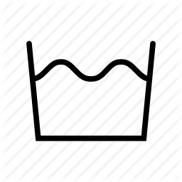 | Може да се пере в пералня |
| 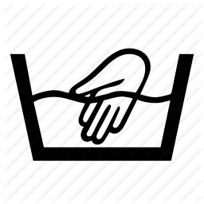 | Само ръчно пране |
| 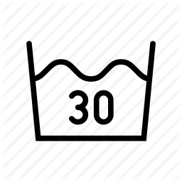 | Да се пере при максимална температура 30 градуса |
| 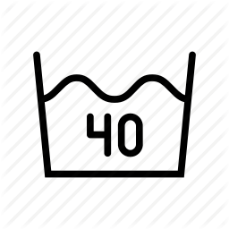 | Да се пере при максимална температура 40 градуса |
| 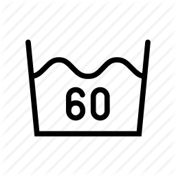 | Да се пере при максимална температура 60 градуса |
| 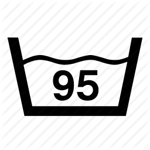 | Може да се пере с кипяща вода |
| Центрофугиране в сушилня(сушене) | |
|---|---|
 |
Да не се центрофугира |
| Може да се центрофугира | |
| Да се центрофугира при ниска температура | |
| Да се центрофугира при средна температура | |
| Може да се центрофугира при висока температура | |
| Химическо чистене | |
|---|---|
| Да не се подлага на химическо чистене | |
| Може да се подлага на химическо чистене | |
| Могат да се използват всякакви разтворители | |
| 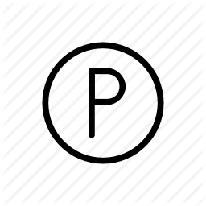 | Професионално химическо чистене |
| 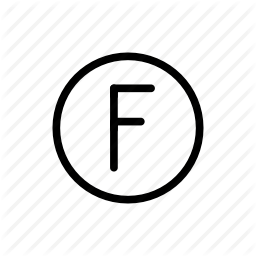 | Професионално химическо чистене в хидрокарбонати |
| Сушене | |
|---|---|
| 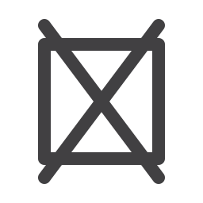 | Да не се суши |
| Може да се суши | |
 |
Да се суши закачено вертикално |
| 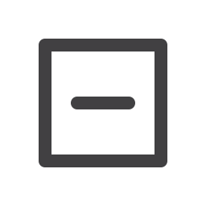 | Да се суши на хоризонтална повърхност |
| 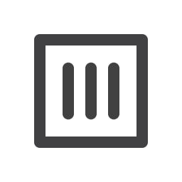 | Да се суши без изтискване |
| 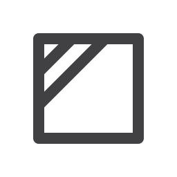 | Да се суши на сянка |